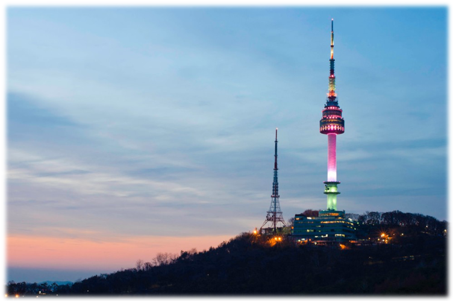
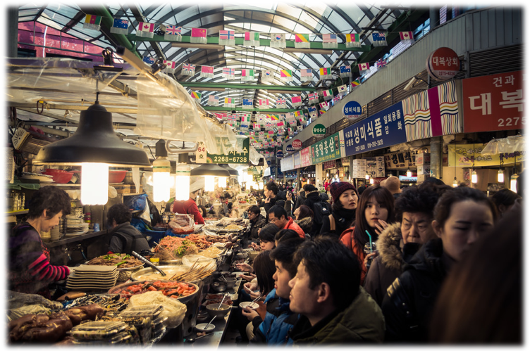
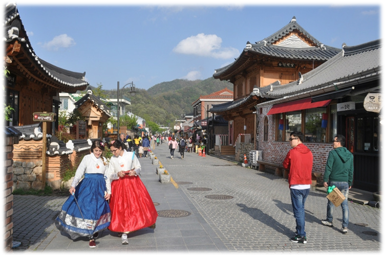
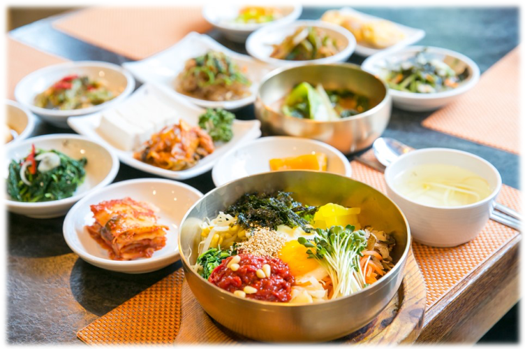
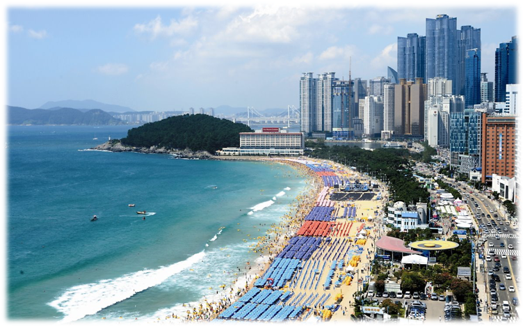
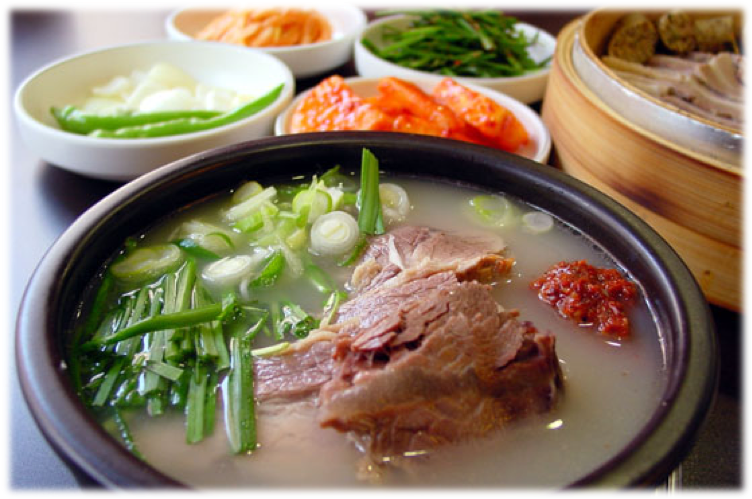
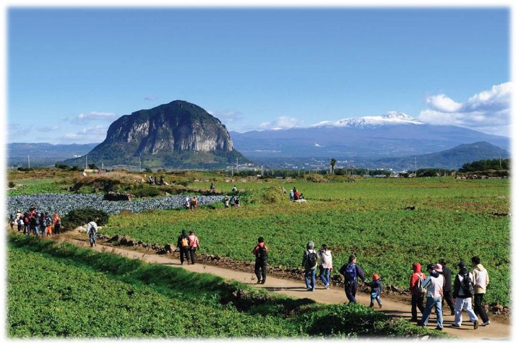
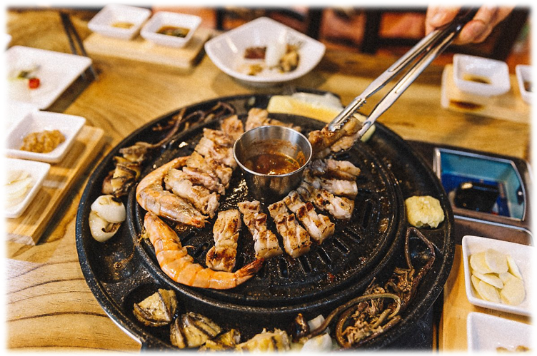

Nソウルタワーと廣藏市場(クァンジャンシジャン)
Nソウルタワーの旧名は「南山タワー」、電波送出用の塔であり、展望台ではソウル市内の各所を見ることができます。
廣藏市場では市場特有の屋台で韓国のいろんな食べ物を味わえます。


韓屋村(ハノッマウル)と全州ビビンバ
韓屋村には韓国伝統の昔の家が集まっている村です。韓服の貸与もできます。
ビビンバは様々な野菜がたっぷりと入っていてとてもヘルシーで美味しいです。


海雲臺（ヘウンデ）とテジクッパ（豚肉のスープ飯）
海雲臺は海水浴場とそこから見える廣安大橋が有名な地域です。
クッパは「クク(スープ)」と「バプ(ご飯)」を組み合わせたもので、豚(テジ)肉が入ったテジクッパはプサンで大人気の食べ物です。


オルレキルと黒豚サムギョプサル
オルレ(濟州方言で小路)＋キル(道)は濟州の景色を楽しめる長さ422kmのトレールで、いろんなコースを選べます。
濟州特産の黒豚肉を焼いたサムギョプサルです。濟州には黒豚以外にもミカンやチョコレートも有名です。
韓国観光公社公式サイト リンク(JPN)
韓国観光CM with EXO リンク(JPN)